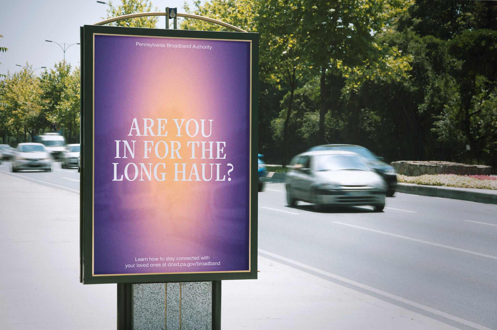
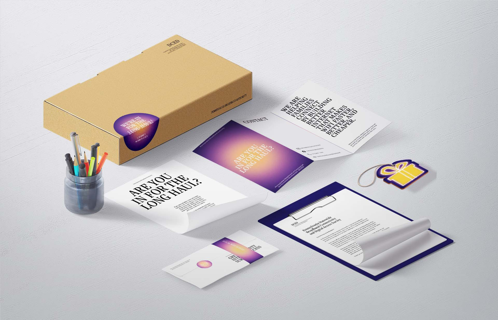
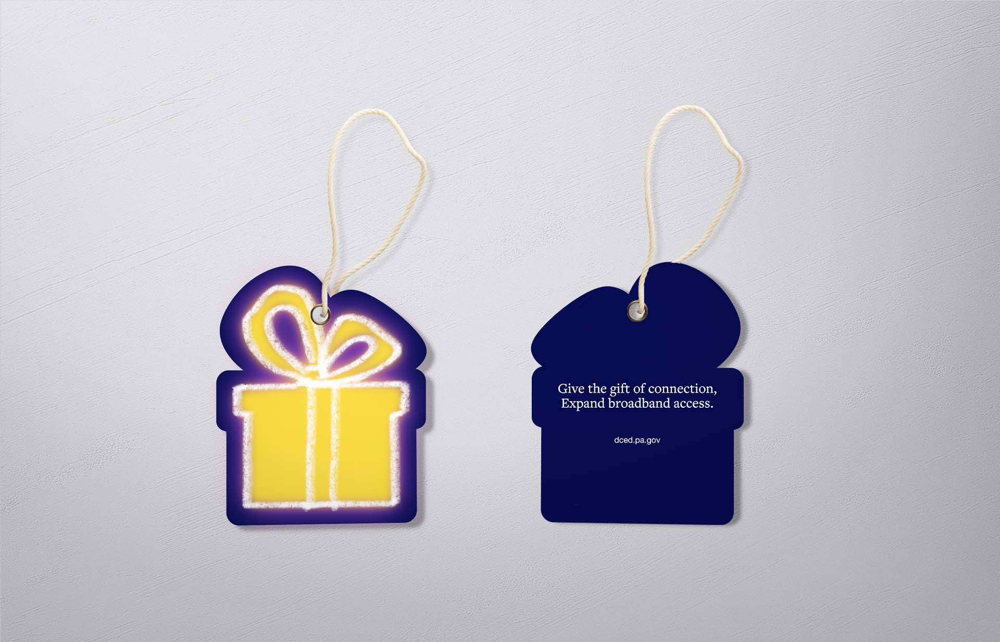
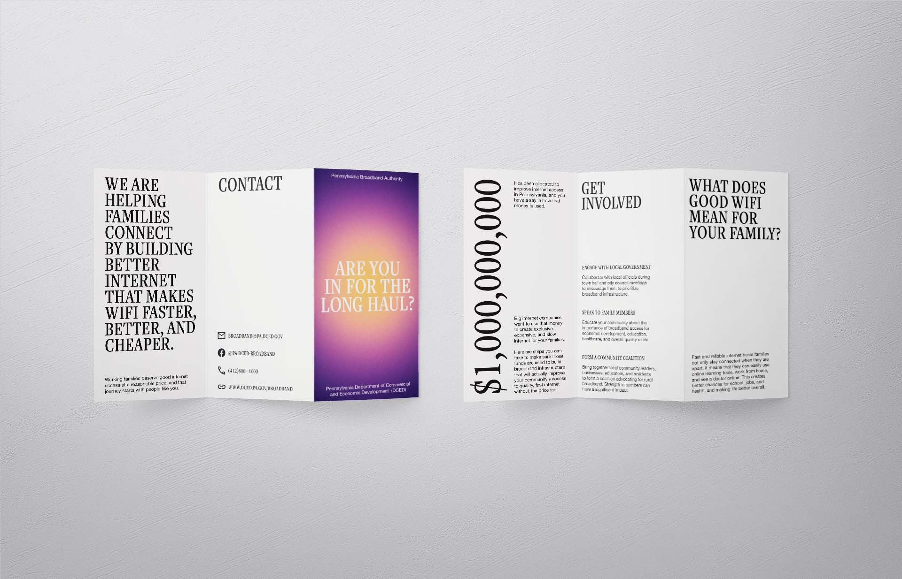

-
The Long Haul
Campaign design
-
A campaign to inspire Middle-America to care about their internet.
-
-    
-
Nearly 50% of Pennsylvanians can't access affordable, reliable internet. They have the power to change that, they just don't know it yet. In 2023, the Biden administration dedicated $1,000,000,000 for Pennsylvanian broadband expansion efforts. The Commonwealth of Pennsylvania released a state-wide survey to gather information on internet access data, in order to identify areas to allocate that money. This campaign aims to raise awareness for broadband expansion, and ultimately encourage the most underserved demographics to partake in the survey.
The development of this campaign aimed to overcome many of the prevailing disparities between design as taught in education, and sociopolitical differences across rural America. With deliberate sensitivity towards marketing, visual style, and brand voice, this campaign is a theoretical targeted towards a conservative audience.